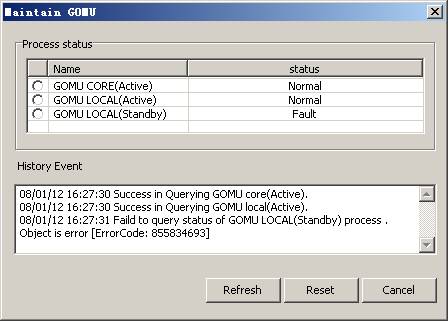

This describes how to monitor the server status, reset the faulty server process, and check the history records of server maintenance.
Prerequisites
- The LMT runs normally.
- The BSC is functional.
- The communication between the LMT and the BSC is normal.
- Start the DAEMON process on the server.
Context
You can monitor the server process to obtain the information about the running status of the GBAM. The process consists of the core process and the local process. When the GBAM local process incurs an error, you can reset it. You can also check the history records of the server maintenance performed by all the users.
Resetting the core process of the server may disrupt some time-consuming OM operations. The communication between the LMT and server may also be disrupted.
This following description is based on GOMU maintenance.
Procedure
- Through GUI
- On the LMT, choose . The Maintain GBAM dialog box is displayed, as shown in Figure 1.
Figure 1 Maintain GBAM dialog box
- Click Refresh.
- Check the status of the GOMU in the Process status box.
- Check the operation result in the History Event box.
- Select the faulty Process and click Reset.
- Click Cancel.
- Through MML
- On the Local Maintenance Terminal, run the following commands to monitor the OMU process status and reset the OMU fault process.
- Run the DSP OMUPROCESS command to monitor the server process status.
- Run the RST OMULOCAL command to reset the server local process.
- Run the RST OMUCORE command to reset the core process of the server.
Copyright © Huawei Technologies Co., Ltd.